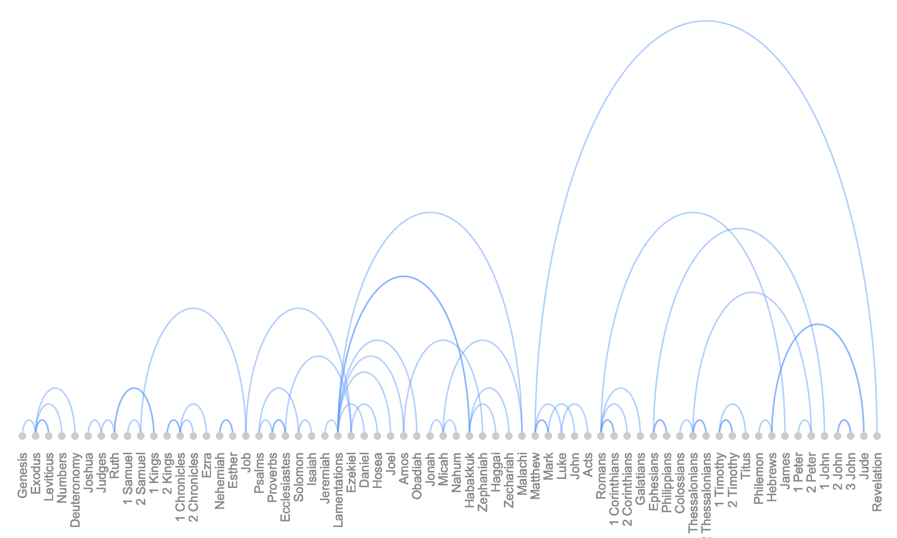

Bible Books Cosine Similarity
How do the books of the KJV Bible compare to each other word for word? Are Old Testament books more similar to other Old Testament books? Same for the New Testament? What about the Greek (Nestle-Aland 26th/27th edition) translation of the New Testament?
Naturally, I wrote a little perl program of the classic NLP measure to tell me: cosine-similarity. It is not the most efficient but it works perfectly!
Here are the KJV results:
Best match: 01 - Genesis.txt => 02 - Exodus.txt
cosine: 0.514, radian: 1.030, degree: 59.039
Best match: 02 - Exodus.txt => 04 - Numbers.txt
cosine: 0.557, radian: 0.980, degree: 56.148
Best match: 03 - Leviticus.txt => 02 - Exodus.txt
cosine: 0.526, radian: 1.017, degree: 58.247
Best match: 04 - Numbers.txt => 02 - Exodus.txt
cosine: 0.557, radian: 0.980, degree: 56.148
Best match: 05 - Deuteronomy.txt => 02 - Exodus.txt
cosine: 0.554, radian: 0.983, degree: 56.345
Best match: 06 - Joshua.txt => 07 - Judges.txt
cosine: 0.519, radian: 1.025, degree: 58.706
Best match: 07 - Judges.txt => 09 - 1 Samuel.txt
cosine: 0.538, radian: 1.003, degree: 57.481
Best match: 08 - Ruth.txt => 17 - Esther.txt
cosine: 0.405, radian: 1.154, degree: 66.110
Best match: 09 - 1 Samuel.txt => 10 - 2 Samuel.txt
cosine: 0.571, radian: 0.963, degree: 55.161
Best match: 10 - 2 Samuel.txt => 09 - 1 Samuel.txt
cosine: 0.571, radian: 0.963, degree: 55.161
Best match: 11 - 1 Kings.txt => 14 - 2 Chronicles.txt
cosine: 0.624, radian: 0.897, degree: 51.387
Best match: 12 - 2 Kings.txt => 14 - 2 Chronicles.txt
cosine: 0.591, radian: 0.939, degree: 53.782
Best match: 13 - 1 Chronicles.txt => 14 - 2 Chronicles.txt
cosine: 0.497, radian: 1.050, degree: 60.179
Best match: 14 - 2 Chronicles.txt => 11 - 1 Kings.txt
cosine: 0.624, radian: 0.897, degree: 51.387
Best match: 15 - Ezra.txt => 16 - Nehemiah.txt
cosine: 0.530, radian: 1.013, degree: 58.021
Best match: 16 - Nehemiah.txt => 15 - Ezra.txt
cosine: 0.530, radian: 1.013, degree: 58.021
Best match: 17 - Esther.txt => 27 - Daniel.txt
cosine: 0.449, radian: 1.105, degree: 63.322
Best match: 18 - Job.txt => 19 - Psalms.txt
cosine: 0.576, radian: 0.957, degree: 54.815
Best match: 19 - Psalms.txt => 23 - Isaiah.txt
cosine: 0.589, radian: 0.941, degree: 53.899
Best match: 20 - Proverbs.txt => 18 - Job.txt
cosine: 0.533, radian: 1.008, degree: 57.758
Best match: 21 - Ecclesiastes.txt => 20 - Proverbs.txt
cosine: 0.470, radian: 1.081, degree: 61.938
Best match: 22 - Song of Solomon.txt => 38 - Zechariah.txt
cosine: 0.392, radian: 1.168, degree: 66.914
Best match: 23 - Isaiah.txt => 19 - Psalms.txt
cosine: 0.589, radian: 0.941, degree: 53.899
Best match: 24 - Jeremiah.txt => 23 - Isaiah.txt
cosine: 0.588, radian: 0.942, degree: 53.967
Best match: 25 - Lamentations.txt => 38 - Zechariah.txt
cosine: 0.450, radian: 1.104, degree: 63.226
Best match: 26 - Ezekiel.txt => 24 - Jeremiah.txt
cosine: 0.554, radian: 0.984, degree: 56.372
Best match: 27 - Daniel.txt => 24 - Jeremiah.txt
cosine: 0.482, radian: 1.068, degree: 61.210
Best match: 28 - Hosea.txt => 38 - Zechariah.txt
cosine: 0.472, radian: 1.079, degree: 61.842
Best match: 29 - Joel.txt => 38 - Zechariah.txt
cosine: 0.444, radian: 1.110, degree: 63.616
Best match: 30 - Amos.txt => 38 - Zechariah.txt
cosine: 0.465, radian: 1.087, degree: 62.301
Best match: 31 - Obadiah.txt => 39 - Malachi.txt
cosine: 0.380, radian: 1.181, degree: 67.691
Best match: 32 - Jonah.txt => 39 - Malachi.txt
cosine: 0.399, radian: 1.160, degree: 66.491
Best match: 33 - Micah.txt => 38 - Zechariah.txt
cosine: 0.479, radian: 1.071, degree: 61.353
Best match: 34 - Nahum.txt => 29 - Joel.txt
cosine: 0.384, radian: 1.177, degree: 67.449
Best match: 35 - Habakkuk.txt => 33 - Micah.txt
cosine: 0.415, radian: 1.143, degree: 65.483
Best match: 36 - Zephaniah.txt => 33 - Micah.txt
cosine: 0.430, radian: 1.126, degree: 64.540
Best match: 37 - Haggai.txt => 38 - Zechariah.txt
cosine: 0.428, radian: 1.128, degree: 64.651
Best match: 38 - Zechariah.txt => 33 - Micah.txt
cosine: 0.479, radian: 1.071, degree: 61.353
Best match: 39 - Malachi.txt => 37 - Haggai.txt
cosine: 0.423, radian: 1.134, degree: 64.997
Best match: 40 - Matthew.txt => 41 - Mark.txt
cosine: 0.699, radian: 0.797, degree: 45.641
Best match: 41 - Mark.txt => 40 - Matthew.txt
cosine: 0.699, radian: 0.797, degree: 45.641
Best match: 42 - Luke.txt => 40 - Matthew.txt
cosine: 0.679, radian: 0.825, degree: 47.269
Best match: 43 - John.txt => 41 - Mark.txt
cosine: 0.560, radian: 0.976, degree: 55.932
Best match: 44 - Acts.txt => 42 - Luke.txt
cosine: 0.522, radian: 1.021, degree: 58.511
Best match: 45 - Romans.txt => 46 - 1 Corinthians.txt
cosine: 0.509, radian: 1.037, degree: 59.399
Best match: 46 - 1 Corinthians.txt => 45 - Romans.txt
cosine: 0.509, radian: 1.037, degree: 59.399
Best match: 47 - 2 Corinthians.txt => 45 - Romans.txt
cosine: 0.474, radian: 1.077, degree: 61.680
Best match: 48 - Galatians.txt => 45 - Romans.txt
cosine: 0.459, radian: 1.093, degree: 62.646
Best match: 49 - Ephesians.txt => 51 - Colossians.txt
cosine: 0.542, radian: 0.999, degree: 57.213
Best match: 50 - Philippians.txt => 53 - 2 Thessalonians.txt
cosine: 0.453, radian: 1.100, degree: 63.039
Best match: 51 - Colossians.txt => 49 - Ephesians.txt
cosine: 0.542, radian: 0.999, degree: 57.213
Best match: 52 - 1 Thessalonians.txt => 53 - 2 Thessalonians.txt
cosine: 0.507, radian: 1.039, degree: 59.531
Best match: 53 - 2 Thessalonians.txt => 52 - 1 Thessalonians.txt
cosine: 0.507, radian: 1.039, degree: 59.531
Best match: 54 - 1 Timothy.txt => 55 - 2 Timothy.txt
cosine: 0.450, radian: 1.104, degree: 63.236
Best match: 55 - 2 Timothy.txt => 54 - 1 Timothy.txt
cosine: 0.450, radian: 1.104, degree: 63.236
Best match: 56 - Titus.txt => 54 - 1 Timothy.txt
cosine: 0.420, radian: 1.137, degree: 65.146
Best match: 57 - Philemon.txt => 63 - 2 John.txt
cosine: 0.409, radian: 1.150, degree: 65.865
Best match: 58 - Hebrews.txt => 45 - Romans.txt
cosine: 0.467, radian: 1.085, degree: 62.159
Best match: 59 - James.txt => 62 - 1 John.txt
cosine: 0.417, radian: 1.141, degree: 65.348
Best match: 60 - 1 Peter.txt => 49 - Ephesians.txt
cosine: 0.445, radian: 1.110, degree: 63.579
Best match: 61 - 2 Peter.txt => 65 - Jude.txt
cosine: 0.433, radian: 1.123, degree: 64.371
Best match: 62 - 1 John.txt => 53 - 2 Thessalonians.txt
cosine: 0.447, radian: 1.107, degree: 63.449
Best match: 63 - 2 John.txt => 64 - 3 John.txt
cosine: 0.452, radian: 1.102, degree: 63.134
Best match: 64 - 3 John.txt => 63 - 2 John.txt
cosine: 0.452, radian: 1.102, degree: 63.134
Best match: 65 - Jude.txt => 61 - 2 Peter.txt
cosine: 0.433, radian: 1.123, degree: 64.371
Best match: 66 - Revelation.txt => 40 - Matthew.txt
cosine: 0.500, radian: 1.047, degree: 59.975
Knowing that Moses wrote the first 5 books tells me that other clusters of linked books might be by the same author, too... However, this analysis considers the KJV translation more than it represents the "actual text" - of the original writings.
Here is the arc diagram illustrating the paired relationships: 
{kind=link}
Here is the arc diagram of the Greek New Testament by individual chapter:
{kind=link}
The colored dots mark the beginning of each book.